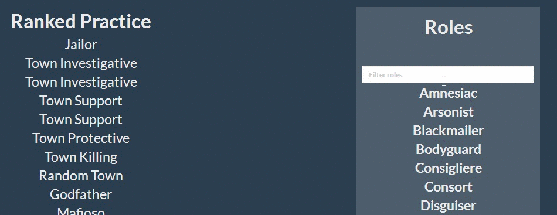

Welcome!
Hello, this is a Town of Salem companion app to help you keep track of different roles during the game. This is mainly intended for players of Ranked and Ranked Practice.
Functionality:
Strikethrough!
Click on roles/categories to strike them out and eliminate options:

Filter Alignments!
If you don't know an alignment/category of role filter it out using the search box and let the app do the work for you:

Begin!
Begin by clicking on Ranked Practice in the navigation bar above
Contact Us
If you have any questions or suggestions, feel free to fill out the form and we will get back to you as soon as possible!
Donate
Any donations would be very helpful, please consider it as we are an Ad-Free website built to help our users.